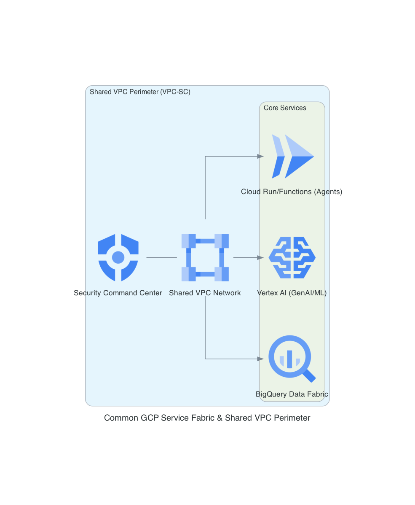
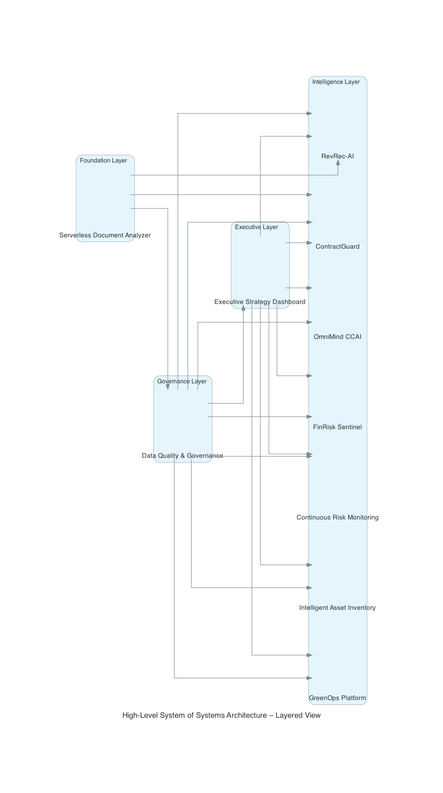
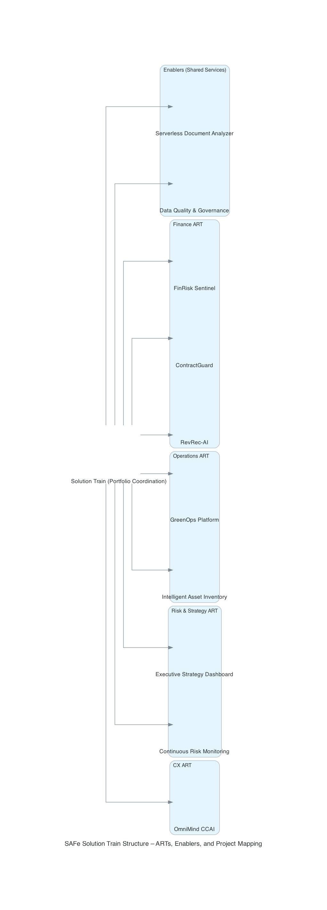
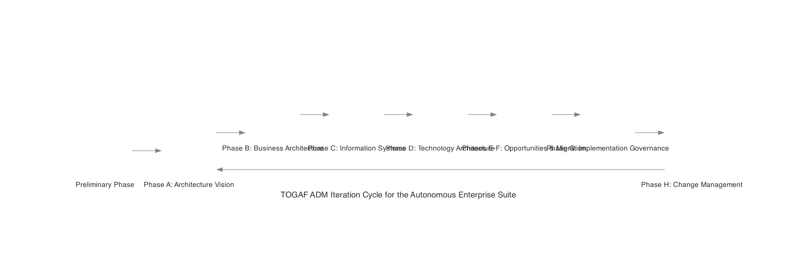
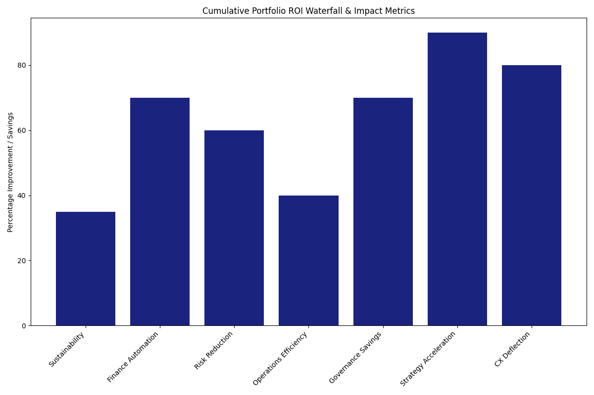

Executive Summary: The Autonomous Enterprise – A Sovereign System of Systems
Vision: To create a fully autonomous, agentic enterprise where growth is decoupled from human latency — a TOGAF-aligned, SAFe-governed System of Systems on Google Cloud that orchestrates sustainability, finance, risk, governance, operations, and customer experience as interconnected, self-optimizing intelligence layers.
The Strategic Imperative
Enterprises today face exponential complexity: regulatory scrutiny, sustainability mandates, unstructured data deluge, fragmented decision-making, and rising cyber/financial risks. Legacy silos and manual processes create latency gaps that erode competitiveness and expose organizations to millions in avoidable costs.
The Integrated Solution
The Autonomous Enterprise is a cohesive ecosystem of 11 GCP-native platforms — from serverless document ingestion to agentic contact center orchestration — unified by a sovereign data fabric, zero-trust perimeters, and hierarchical GenAI swarms. Every component contributes to a single, auditable intelligence layer.
Portfolio-Wide Strategic Impact
- 🌍 Sustainability: 30–40% carbon & cost reduction (GreenOps)
- 💰 Finance: 70% automation in revenue recognition & compliance (RevRec-AI, ContractGuard)
- 🛡️ Risk: 60% false positive reduction & real-time threat resolution (FinRisk, Continuous Monitoring)
- 🔧 Operations: 40% unplanned downtime elimination (Intelligent Asset Inventory)
- 📊 Governance: 70% audit cost savings & 40% trust uplift (Data Quality Pipeline)
- 📈 Strategy: 90% faster executive decisioning (Strategy Dashboard)
- 🤝 CX: 80% inquiry deflection & 40% OpEx reduction (OmniMind CCAI)
- 🔒 Foundation: Sovereign, serverless ingestion for all (Document Analyzer)
Built on Google Cloud’s sovereign AI stack with VPC-SC perimeters, CMEK encryption, and agentic orchestration, this portfolio delivers enterprise-grade autonomy — reducing operational friction, ensuring regulatory certainty, and enabling proactive, data-driven growth at scale.
Google Cloud Integration: The Sovereign Foundation
The entire ecosystem is anchored in a Sovereign, Serverless, and Zero-Trust landing zone standard. Every project inherits this baseline to ensure bank-grade security.
- • Vertex AI & Gemini: Multi-modal reasoning, agentic swarms, and RAG grounding
- • BigQuery: Federated data fabric, ML, and real-time analytics
- • Pub/Sub & Dataflow: Event-driven ingestion and streaming pipelines
- • Cloud Run / Functions: Scale-to-zero serverless execution
- • Document AI: Multimodal unstructured data extraction
- • VPC-SC & CMEK: Sovereign perimeters and data residency
- • Cloud Monitoring & Logging: Observability and audit trails
Skills & Expertise: Solution Train Competencies
Cross-portfolio capabilities that enable the Autonomous Enterprise as a unified system of systems.
| Skill / Expertise | Role / Persona | Portfolio-Wide Deliverable | Business Impact |
|---|---|---|---|
| Enterprise Architecture (TOGAF) | Lead Architect / CDO | ADM Cycle & Capability Mapping across all subsystems | Standardized integration & 30% technical debt reduction |
| SAFe 6.0 SPC | Solution Train Engineer | Solution Train coordination & ART of ARTs | 35% improved strategic alignment & delivery velocity |
| GCP Cloud Architecture | Cloud Architect / CISO | Sovereign landing zone with VPC-SC & CMEK | Zero-trust security & regulatory compliance |
| GenAI Engineering | AI/ML Lead | Hierarchical agentic swarms (LangGraph/CrewAI) | 80% automation of cognitive tasks |
| Data Governance & MLOps | Data Steward / MLE | Drift detection, lineage, and self-healing pipelines | 40% trust uplift & 70% audit cost reduction |
High-Level System of Systems Architecture
A unified view of the Autonomous Enterprise as interconnected intelligence layers, from ingestion to customer orchestration.
SAFe 6.0: The ART of ARTs – Solution Train Coordination
Domain-specific Agile Release Trains (ARTs) are coordinated by a Solution Train to deliver cross-cutting enablers (security, governance, data quality) consistently across the ecosystem.
TOGAF ADM: Enterprise-Wide Application
Application of TOGAF Phases across the ecosystem to maintain architectural integrity and strategic alignment.
Day 2 Governance: Sovereign, Self-Healing Operations
Beyond initial deployment, the Autonomous Enterprise maintains resilience, compliance, and continuous improvement through automated Day 2 practices.
| Governance Pillar | Implementation | Outcome |
|---|---|---|
| Observability & SLOs | Cloud Monitoring, Trace, Logging | 99.99% uptime & sub-second latency alerts |
| Security & Sovereignty | VPC-SC, CMEK, IAP, DLP | Zero exfiltration & regulatory residency |
| MLOps & Drift Defense | Vertex AI Monitoring & Pipelines | Automated retraining & model freshness |
| FinOps Guardrails | Budget alerts & scale-to-zero | Near-zero idle cost across portfolio |
| Human-in-the-Loop | Confidence gating & escalation | Safety for high-risk decisions |

Portfolio Components: The Autonomous Enterprise Ecosystem
11 interconnected GCP-native solutions forming a unified System of Systems.
Data Quality & Governance
Automated validation, drift detection, and rule generation.
View Project →Intelligent Asset Inventory
Predictive maintenance and RUL forecasting for physical assets.
View Project →Serverless Document Analyzer
Zero-cost unstructured data ingestion and multimodal extraction.
View Project →Aggregate Value Realization
Combined impact of the Autonomous Enterprise ecosystem on operational efficiency, compliance, and strategic growth.
